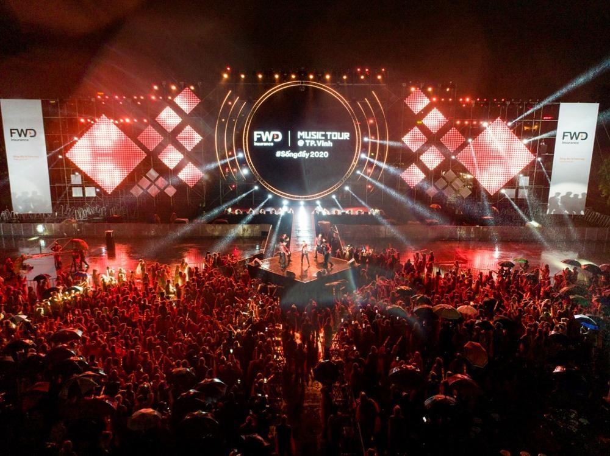

Cảm hứng âm nhạc của Gracie Abrams đến từ hàng loạt nghệ sĩ nổi tiếng cô thần tượng như: Joni Mitchell, The 1975, Tyler, The Creator… Thậm chí người đẹp còn có thói quen nghe album American Idiot của Green Day trước mỗi tối đi ngủ. Âm nhạc đã trở thành niềm đam mê, thứ chẳng thể thiếu trong cuộc đời của Gracie Abrams.